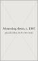

The focus area of my Major Textiles Project is costume. Costume establishes a character before dialogue or action, and that idea has driven every decision in this folio.
The character is Wednesday Addams, dressed for a school dance she did not want to attend. The costume has to read at performance distance under gym lighting: one black silhouette, one hard white shape at the neck, and a skirt that moves when she does. It would not be worn as modern daywear, and that is the point.
The whole scheme is black on black in two textures - a matte satin bodice and sheer tulle tiers - so the audience reads shape and movement rather than colour. The single white collar is the only contrast, and it is detachable so the dress can be worn without it.
The fitted bodice, long sleeves, tiered skirt and white collar reference images 1 to 4 directly, so the audience recognises the period the character is drawn from before she has said a word.
The innovation is a fusion of three periods in one garment: the closed, high-necked line of 1900s mourning dress, the tiered tulle of the 1920s, and the tea-length party silhouette of the 1950s, resolved for a character written in 2022.
The historical half of the fusion is structural - princess-seamed bodice, long fitted sleeve, graded tiers, tea length. The contemporary half is in the materials and the making - polyester crepe satin used matte side out, nylon tulle cut raw so the tiers stay light, and an invisible zip in place of a placket.
Two decisions are genuinely my own. First, the white collar is detachable on snaps, so one dress gives two readings: with the collar it is Wednesday, without it it is a black evening dress. Second, the three tiers are graded in depth, 12, 16 and 20 cm, so the skirt widens towards the hem and moves in a delay when she turns.
Selected pages of this folio print in black and white, in the manner of the 1964 television series the character comes from. Where a plate is monochrome, that is a design decision, not a printing fault.